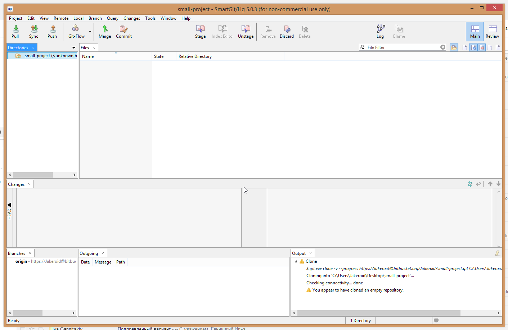

Из всего разнообразия визуальных Git-клиентов самым вменяемым оказался SmartGit
http://www.syntevo.com/smartgit
Через него можно наглядно и достаточно понятно производить все основные действия с Git. Есть окно консоли, в котором видно, какие команды формируются при выполнении всяческих действий, и что отвечает Git в консоль.
Скриншот:
